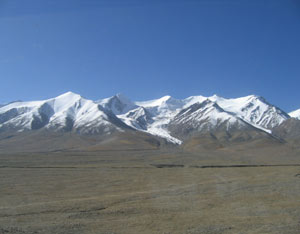

(The following was written in July 2009, before the Copenhagen climate change conference.)
From my pre-Copenhagen vantage point, internationally negotiated climate agreements are fast becoming obsolete for two reasons. First, because no government wants to concede too much compared with other governments, the negotiated goals for cutting carbon emissions will almost certainly be minimalist, not remotely approaching the bold cuts that are needed.
And second, because it takes years to negotiate and ratify these agreements, we may simply run out of time. This is not to say that we should not participate in the negotiations and work hard to get the best possible result. But we should not rely on these agreements to save civilization.
Some of the most impressive climate stabilization advances, such as the powerful U.S. grassroots movement that has led to a de facto moratorium on new coal-fired power plants, had little to do with international negotiations. At no point did the leaders of this movement say they wanted to ban new coal-fired power plants only if Europe does, if China does, or if the rest of the world does. They moved ahead unilaterally, knowing that if the United States does not quickly cut carbon emissions, the world will be in trouble.
We are in a race between political tipping points and natural tipping points. Can we cut carbon emissions fast enough to save the Greenland ice sheet and avoid the resulting rise in sea level? Can we close coal-fired power plants fast enough to save the glaciers in the Himalayas and on the Tibetan Plateau, the ice melt of which sustains the major rivers and irrigation systems of Asia during the dry season? Can we stabilize population by reducing fertility before nature takes over and stabilizes our numbers by raising mortality?
On the climate front, everything seems to be moving faster. Only a few years ago summer sea ice in the Arctic Ocean was shrinking, but it was projected to last for several decades. The most recent reports indicate that it could disappear in a matter of years.
Only a few years have passed since the most recent report by the Intergovernmental Panel on Climate Change (IPCC), but already the rise in carbon dioxide emissions, the rise in temperature, and the rise in sea level are all moving faster than even the IPCC’s worst-case scenario.
The good news is that the shift to renewable energy is occurring at a rate and on a scale that we could not imagine even two years ago. Consider what is happening in Texas, in the heart of oil country. The more than 8,000 megawatts of wind generating capacity in operation, the 1,000 megawatts under construction, and a huge amount in development will give it more than 50,000 megawatts of wind generating capacity (think 50 coal-fired power plants). This will more than satisfy the residential needs of the state’s 24 million people.
China, with its Wind Base program, is working on seven wind farm mega-complexes with a total generating capacity of 110,000 megawatts. And this is in addition to the many smaller wind farms already in operation and under construction. A recent report in Science on an inventory of China’s wind resources concludes that the country can increase its current electricity generation sevenfold from wind alone.
Most recently, a consortium of European corporations and investment banks has announced a proposal to develop a massive amount of solar thermal generating capacity in North Africa, much of it for export to Europe. In total, it could easily exceed 300,000 megawatts - roughly three times the electrical generating capacity of France.
And we could cite many more examples. The energy transition from fossil fuels to renewable sources of energy is moving much faster than most people realize. In the United States, for example, while coal use has dropped 11 percent over the last two years, an estimated 190 new wind farms with over 16,000 megawatts of generating capacity have come online.
The question we face is not what we need to do, because that seems rather clear to those who are analyzing the global situation. The challenge is how to do it in the time available. Unfortunately we don’t know how much time remains. Nature is the timekeeper, but we cannot see the clock.
In my recent book, Plan B 4.0: Mobilizing to Save Civilization, I lay out a strategy to stabilize climate, curb population growth, eradicate poverty, and restore the Earth’s damaged ecosystems. The climate component of that plan calls for reducing net carbon emissions worldwide 80 percent by 2020. The 2020 goal looks at what is needed to avert dangerous climate change, not just what is politically convenient. Plan B is ambitious simply because this is what it is going to take to turn things around. Will it be difficult? No question. Are the stakes high? No question.
The thinking that got us into this mess is not likely to get us out. We need a new mindset. Let me paraphrase a comment by environmentalist Paul Hawken in a 2009 college commencement address. In recognizing the enormity of the challenge facing us, he said: First we need to decide what needs to be done. Then we do it. And then we ask if it is possible.
|
 FLICKR/BROGGE1 We are in a race between political tipping points and natural tipping points. Can we cut carbon emissions quickly enough to save natural resources, such as the glaciers on the Tibetan Plateau? |
|
|